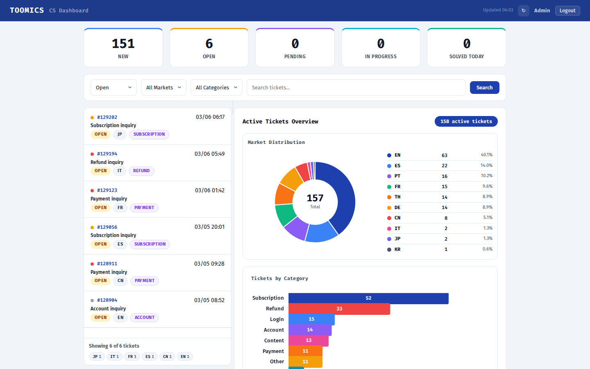
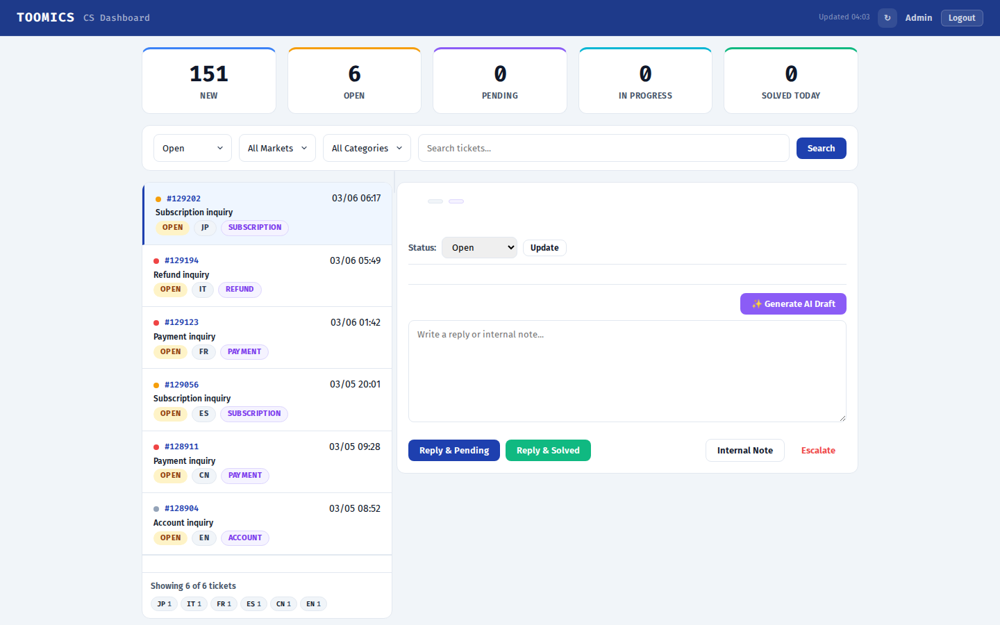
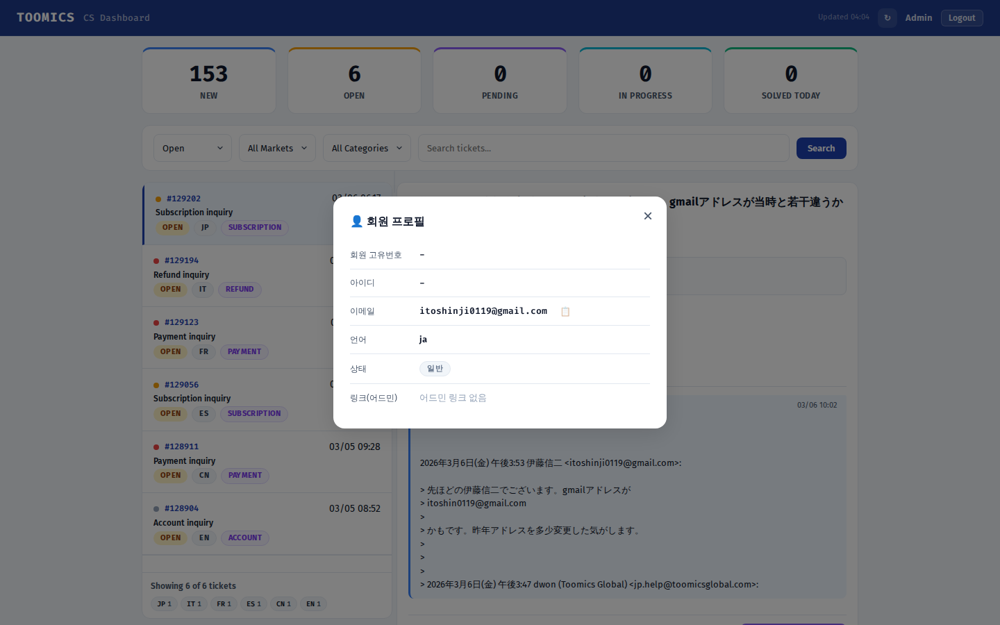

별도 챗봇 UI가 아닌, 기존 Zendesk UX를 유지한 채 AI가 뒤에서 투명하게 작동하는 CS 자동화 전략
최근 글로벌 소비자 조사에서 일관되게 나타나는 트렌드가 있습니다.
고객의 상당수가 "AI 봇과 대화하고 있다"는 걸 인지하는 순간 신뢰도가 떨어지고, 처음부터 사람 상담원을 요구하는 비율이 높아지고 있습니다. 특히 결제/환불 같은 민감한 이슈에서는 "봇이 내 돈 문제를 제대로 처리할 수 있을까"라는 불안감이 큽니다.
10개 마켓, 다국어 고객을 상대하기 때문에 거부감이 더 크게 작용합니다. 유럽 고객(DE, FR)은 특히 개인정보와 자동화 처리에 민감하며, GDPR 관련 삭제 요청도 매주 발생하고 있습니다.
| 항목 | 별도 AI 챗봇 (프로토타입) | Zendesk 투명 통합 (현재 방향) ✓ |
|---|---|---|
| 고객 경험 | 새로운 채팅 UI 적응 필요 "봇과 대화 중" 인지 거부감 |
기존 Zendesk 이메일/폼 그대로 AI 인지 불가 자연스러움 |
| 고객 신뢰도 | "AI가 대답하네" → 사람 요청 증가 | 변화 없음, 답변이 빨라졌을 뿐 |
| 이탈 리스크 | 봇 불만족 → "사람 연결" 반복 → 이중 처리 | 없음 — 기존 CS 채널과 동일 |
| 상담원 워크플로우 | Zendesk + 챗봇 이중 관리 | 대시보드 하나로 통합 |
| 학습 비용 | 새 시스템 교육 필요 | 기존 워크플로우 + 대시보드만 추가 |
| 도입 리스크 | 높음 — 고객 대면 변경 | 낮음 — 백엔드만 변경 |
| 점진적 확대 | 어려움 — ON/OFF 이분법 | 쉬움 — L3부터 카테고리별 확대 |
| 품질 통제 | 봇이 바로 고객에게 노출 | 상담원 확인 단계 포함 (Phase 1) |
| GDPR / 개인정보 | 새 채널 = 새 데이터 처리 동의 필요 | 기존 Zendesk 동의 범위 내 |
고객은 AI와 대화하고 있다는 사실을 모릅니다. 기존에 하던 대로 문의하고, 기존에 받던 대로 답변 받습니다. "AI 봇입니다" 같은 인위적 경험이 없습니다.
Phase 1에서 상담원이 모든 AI Draft를 확인하므로, 잘못된 답변이 나갈 위험이 없습니다. 검증된 카테고리(L3)부터 점진적으로 자동화합니다.
별도 챗봇은 "봇이 못 풀면 결국 사람이 처리"라서 오히려 업무가 늘 수 있습니다. 현재 방향은 AI 초안 → 확인 → 클릭만. L3 자동화 후에는 복잡한 건에만 집중합니다.
매일 처리되는 실제 티켓이 곧 AI 학습 데이터입니다. 별도 챗봇은 사용자가 안 쓰면 데이터가 안 쌓이지만, 이 구조는 기존 CS 운영 = AI 고도화 데이터입니다.
고객 경험은 그대로 유지하면서, 뒤에서 AI 자동화를 단계적으로 확대합니다.
상담원이 모든 답변을 확인 후 발송. AI Draft 품질 데이터 축적 + 스팸 감지 고도화 기간.
L3 대상: 비밀번호 리셋, VIP 해지 방법, 코인 사용법, 로그인 안내 등 단순 반복 문의. 상담원은 L2/L1(환불, 결제 분쟁, 계정 이슈)에만 집중.
대부분의 1차 응답을 AI가 처리. 대시보드는 품질 모니터링, 에스컬레이션 관리, 성과 분석용으로 전환.
AI가 새로운 정보를 만들어내는 것을 절대 허용하지 않습니다. CS 매뉴얼 템플릿, FAQ 문서, 또는 과거 실제 상담원 답변 데이터에 있는 내용만 사용하며, 5%의 variable은 인사말, 연결어, 고객명, 회원번호, 이메일 주소 등 형식적 조정만 허용합니다.
1순위: CS 매뉴얼 템플릿 + FAQ 문서 (12개 섹션, 서브섹션 매칭, 다국어 RAG — FR/DE/ES/JP/PT)
2순위: 과거 CS 데이터 — Solved 티켓의 실제 상담원 답변 (마켓별 톤·템플릿 자동 라우팅)
3순위: 둘 다 없으면 → 답변 생성하지 않고 에스컬레이션 권장
| 기능 | 설명 |
|---|---|
| 스팸/피싱 감지 | 11종 패턴(P1~P11) 자동 감지: 법률사칭, 소셜미디어 사칭(Facebook/Twitter/YouTube/LinkedIn/TikTok), 보안 사칭, 영업 스팸, 파트너십 사칭 등 → 답변 차단 + Mark as Spam |
| 운영자 확인 필요 | V1~V4 운영자 확인 체크포인트: 작품 서비스 상태(V1), 결제 내역(V2), 계정 상태(V3), 맞춤 정보(V4) 자동 하이라이트 |
| 품질 6차원 평가 | template_match · completeness · safety · length · accuracy · tone — 차등 가중치(안전성 30%) + 소스 미포함 문구 즉시 0점 |
| 에스컬레이션 | NO_MATCH, 품질 미달, 환불/결제 민감 케이스, 스팸 의심 → 팀 리드 확인 워크플로우 |
| 다국어 RAG | 8개 마켓(FR/DE/ES/JP/PT/TH/CN/IT) 전용 knowledge JSON — 마켓별 톤 가이드 + 실제 답변 템플릿 + EN fallback |
| 4-Stage 카테고리 분류 | Intent 분석 → Content Scoring (10개 언어) → Consensus → Post-correction(B2B 감지). 10개 카테고리, 언어 자동 감지 + Zendesk 태그 교정 |
현재 운영 중인 Zendesk 실시간 데이터와 연동된 대시보드입니다. 스팸/피싱 자동 감지, AI Draft 생성, 품질 평가가 작동하고 있습니다.
📊 Active Tickets Overview — 차트 대시보드 + 티켓 목록

💬 티켓 상세 — 대화 히스토리 + 상태 타임라인 + AI Draft

👤 고객 프로필 모달 — 회원 정보 + 어드민 링크

AI Draft 엔진이 곧 봇 엔진입니다. Phase 1에서 상담원이 확인하는 단계를 빼면 그게 자동 봇이 됩니다. 별도 시스템을 새로 만드는 것이 아니라, 검증된 엔진의 자동화 범위를 점진적으로 확대하는 구조입니다.